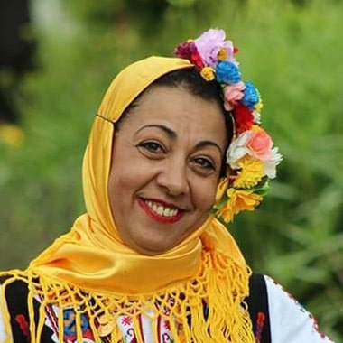
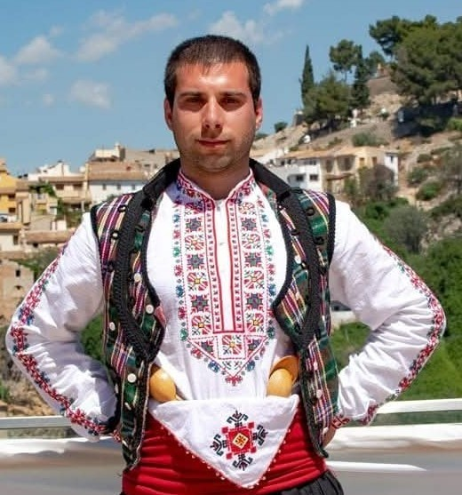

Учител по танци
Казвам се Даниела и съм зодия телец. Моята най-голяма любов са народните танци и българския фолклор в целия му разкош и разнообразие! От 4 годишна съм в репетиционната зала по наследство. Родителите ми танцуваха в самодеен ансамбъл към Окръжен народен съвет Варна и те ми предадоха тази любов, с която ще си остана до живот. Имах щастието да работя нещо, което обожавам - да танцувам.

Учител по танци
Казвам се Стоян.Любовта към танците съм носил цял живот. Това ме заведе до Котел в НУФИ „Филип Кутев“, където се обогатих и донесох със себе си нашата култура и фолклор.